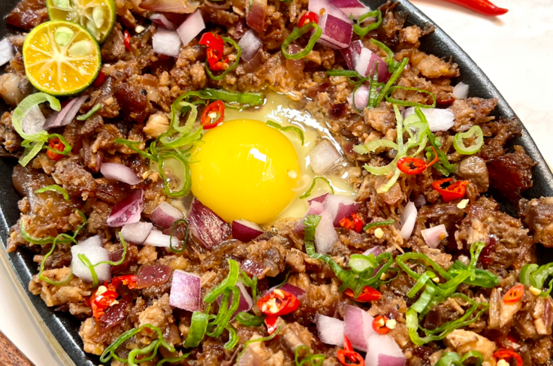

Sisig
Ingredients
-
Pork Belly Preparation
- ~1lb pork belly, sliced small
- 1/2 onion, chopped
- 5 garlic cloves,smashed
- 3 bay leaves
- 1 tsp black peppercorns
- Water, just enough to cover pork belly
-
Pork Belly Sisig
- 2 tbsp unsalted butter
- 1/4 red onion, minced
- 3 garlic cloves, minced
- 1-2 thai chilis, minced
- 1.5 tbsp calamansi, minced
- 1 tbsp liquid seasoning
- 1 tbsp oyster sauce
- 1/4 chicken liver, finely chop
- salt and pepper to taste
-
Toppings
- fried egg
- red onions
- green onions, chopped
- thai chilies, chopped
- calamansi wedges
- In a pot, combine together the pork belly, onions, garlic, bay leaves, black peppercorns,
and just enough water to cover the pork.
-
Bring this to a boil, remove any scum that floats to the surface,
and let it simmer for 45-60 minutes, or until the pork belly is
tender and cooked through.
-
Once tender, drain the boiling liquid.
Let the pork belly air dry in the fridge for at least one hour to overnight.
Prepare the Pork Belly Sisig
-
Air fry the pork belly at 350 F for around 30-45 minutes until crispy,
flipping occasionally to avoid burning. Chop the pork belly into small, bite-sized pieces. Set aside.
-
Melt the butter in a pan over medium heat.
Saute the onions until soft and translucent,
about 5 minutes. Add in the garlic and
Thai chilies, and continue to saute for another
2 minutes until the garlic is golden and fragrant.
-
Add in the chicken liver, and cook until the liver is
fully cooked through, about 5-7 minutes.
-
Finally, toss in the chopped crispy pork belly. Season with
calamansi juice, liquid seasoning, oyster sauce, and salt and pepper
to taste. Continue to stir fry until the pork is fully coated, and the sauce has reduced slightly,
about 3-5 minutes.
-
Serve over a sizzling plate greased with about 1-2 tbsp of butter.
Top with red onions, green onions, chili peppers, and a fried egg. Enjoy!